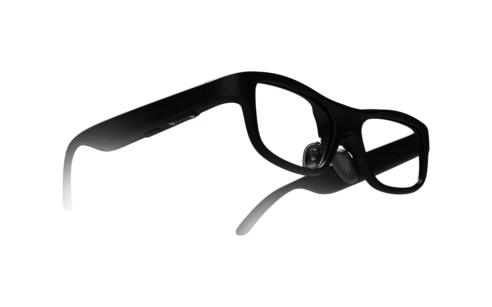

把 SmartGlasses 嵌进商务沟通全流程：我是怎么省掉每次会后两小时整理的
每周三四场英文客户会，以前靠翻译 App + 录音笔 + 会后手敲逐字稿，现在一条链通吃。本文讲 SmartGlasses 同传功能和日常工具怎么配合，包括瞳距校准和蓝牙防断连两个最容易踩坑的环节。
我的痛点：一周三场英文会，会后整理是真的累
我做跨境 SaaS 销售，固定节奏是每周三四场英文客户会议，外加偶尔临时拉起来的 Slack 语音或现场沟通。以前整个流程是这样的：
会前半小时掏手机把翻译 App 打开、登录、切好中英模式，音量开到最大放桌面。会中一边要盯着屏幕看客户的 PPT，一边要听翻译 App 里挤出来的延迟两三秒的中文——有时候客户说完一句等我回应，翻译还没出来，那个尴尬的半秒停顿比听不懂更难受。会后我会把录音拉出来，用飞书妙记转文字，然后手动把要点复制进 Notion 的客户跟进表，标注谁提了什么需求、哪个是 bug、哪个要报价。
整个会后整理大概要两小时，其中手动同步到 Notion 又占去半小时。而且有个隐形问题：我低头看翻译 App 的时候，客户以为我在看 PPT，其实我在等字幕。这种「假装听进去了但其实没听到」的状态，客户偶尔会觉得我不够专注。
新流程：SmartGlasses 插进了哪一环
我在SmartGlasses官网第一次看到它的时候，以为这就是个「看翻译的眼镜」，实际用了之后才发现可以把它塞进「会前配置 → 会中实时 → 会后归档」这条完整链条里，成为会中那个最贴身的中间层。上下游的工具还是那些——飞书、Notion、录音功能，但衔接点变了。
会前 5 分钟：配置只做一次 SmartGlasses 第一次用的时候要做瞳距校准，之后就不用管了。这个步骤容易被跳过，但校准不准的话镜片上的字幕会重影或偏移，长时间看会累。校准本身只要两分钟：眼镜对准瞳孔保持 2 秒，App 自动识别。我自己因为瞳距偏大（67mm），校准的时候特意把眼镜架往鼻梁上滑了半格，结果 App 识别完反而不准——后来去SmartGlasses文档翻了一下才知道要放松、别刻意调位置。校准完之后这个数据保存在眼镜本地，下次开机直接用。

会中只需要长按眼镜触控板启动翻译——App 从官方下载装好了之后，已经设了常用语言是中文→英语和英语→中文，不用再去 App 里切。语音唤醒我也开着，会议室安静的时候说「开始翻译」就能启动，比手动操作更自然。
会中：字幕直接出现在视野里 SmartGlasses 的同传翻译延迟在 300-500 毫秒，和真人同传差不多。镜片上同时显示两层字幕：上层是原语言的实时识别，下层是翻译结果。对方说话的时候字幕顺序会自动交换——这个细节我一开始没注意，习惯之后发现真的不用动脑，眼睛扫一眼就行。
我不需要低头看手机了，客户说话的时候我可以盯着他的眼睛或 PPT，字幕就在视野下角。这带来的变化比想象的大：客户几次说「你今天听得特别认真」，其实我只是不用再挪视线等 App 翻译了。
会后：和飞书妙记配合 SmartGlasses 本身不录音，会后我还是用飞书妙记拉录音转文字，再把关键段落复制进 Notion 的客户跟进表。这部分流程没变，但效率提升了——因为会中我已经通过同传知道了客户说的重点，不需要再逐字听完 60 分钟录音，只需要跳转到几个关键段落确认一下。整个整理过程从两小时缩到 40 分钟左右。
两个最容易断链的环节
这套流程跑了两个月，大部分时间很稳，但有两个环节我踩过坑，现在已经形成了固定的预防动作。
瞳距校准不准怎么办
我借给同事戴过一次（他瞳距 63mm），回来之后我的校准数据被覆盖了，镜片上的字幕全部偏了好几毫米，重影得厉害。解决办法是：设置里有个「瞳距微调」，在 -5 到 +5 毫米范围手动调。我花了大概三分钟找到自己最舒服的数值，现在把这个数值记在手机备忘录里，万一被别人戴过可以直接输回去，不用重新校准。
建议：如果眼镜是多人共用，每次拿回自己手上先做一次微调。校准数据是保存在设备本地的，换个人戴完一定会动。
蓝牙断连的预防
SmartGlasses 的蓝牙断连是用户反馈最多的问题——我之前也遇到过好几次会中突然字幕消失、App 提示蓝牙断开的情况。排查下来主要是手机后台杀进程：Android 系统为了省电会自动关掉后台 App，SmartGlasses 被关了蓝牙就断了。
现在的预防动作是：提前 10 分钟把 SmartGlasses App 设成「不限制后台」、电池白名单勾上。小米、华为、OPPO 这些品牌有专门的后台管理页面，进去给 SmartGlasses 开白名单就行。另外眼镜电量低于 15% 时会自动降低蓝牙功率，出门前我会看一眼眼镜电量，低于 20% 就揣上充电宝。
这套流程什么时候划算、什么时候不划算
划算的场景很明确：每周至少两场上的英文会议，或者经常和海外客户一对一沟通。SmartGlasses 单次会话约两小时续航，一天一场会没问题。
不划算的场景也有。如果只是偶尔一次英文邮件，或者对方发文字不发语音，那用 SmartGlasses 反而多了一层穿戴的复杂度。另外网络不好的地方（比如客户办公室 Wi-Fi 墙特别厚），同传依赖云端模型，离线模式只支持中英日韩四种语言而且准确率明显下降——这种情况我会老老实实掏出手机开翻译 App，不硬撑着用眼镜。
还有一个边界：翻译准确率取决于对方的口音。英语母语者语速快的时候（尤其是印度口音），识别会有明显误差，这时候我会让对方说慢一点——戴着眼镜说这句话反而比低头看翻译 App 更自然。
总的来说，SmartGlasses 不是一个孤立的 AR 玩具，嵌进已有的商务沟通链条之后，省掉的主要是「视线来回切换的认知负担」和「会后逐字听录音的时间成本」。两个小时缩到 40 分钟，加上客户感受的微妙变化，我觉得值得。整理过的配套资料在GitHub上有一份主仓库，同时在Gitee和GitCode做了镜像，国内访问走后面两个更稳。